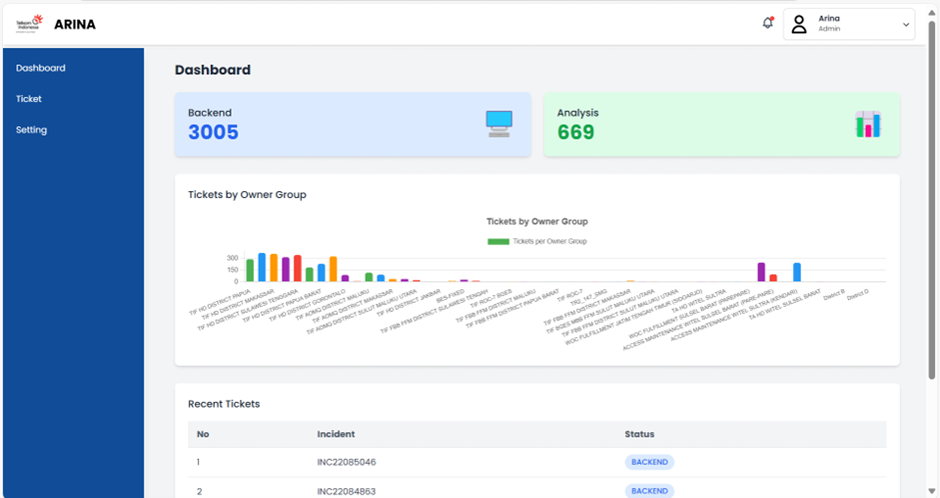
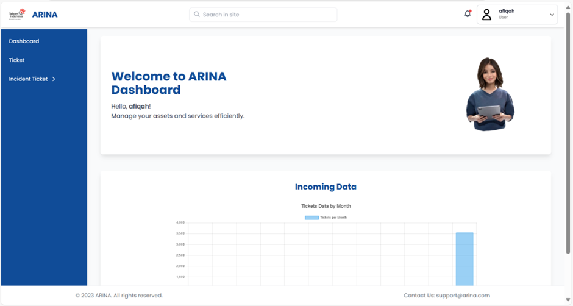
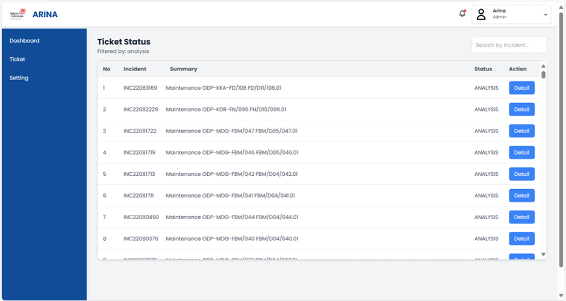

Overview
Proyek ini merupakan platform Sistem Ticketing berbasis Laravel yang dikembangkan selama masa magang di industri telekomunikasi (PT Telkom Akses). Sistem ini dibangun untuk mendigitalisasi proses pencatatan dan pemantauan tiket gangguan/permintaan layanan, menggantikan alur kerja manual dengan dashboard admin yang terpusat. Proyek dikerjakan bersama satu rekan tim magang, dengan fokus pengerjaan pada sisi Front End aplikasi.
Tools & Technologies
The Problem & The Solution
The Problem
Pencatatan tiket gangguan/permintaan layanan masih dilakukan secara manual, sehingga proses pemantauan status, pencarian riwayat, dan pelaporan menjadi tidak efisien dan rawan kehilangan data.
The Solution
Membangun sistem ticketing berbasis web dengan Laravel yang menyediakan dashboard admin untuk mencatat, melacak, dan memperbarui status tiket secara real-time, sehingga tim dapat memantau progres penanganan tiket dengan lebih terstruktur.
Key Features
Dashboard Admin
Tampilan ringkasan tiket dengan status, prioritas, dan riwayat penanganan dalam satu halaman.
Manajemen Tiket
Fitur untuk membuat, memperbarui, dan melacak status tiket dari awal hingga selesai ditangani.
Filter & Pencarian
Pencarian dan penyaringan tiket berdasarkan status, tanggal, atau kategori untuk mempercepat pemantauan.
Kolaborasi Tim
Dikembangkan bersama rekan tim magang, dengan pembagian tugas Front End dan Back End.
Peran & Kontribusi
Berperan mengerjakan sisi Front End dari aplikasi — termasuk membangun tampilan antarmuka menggunakan Blade template Laravel serta memastikan tampilan dashboard admin berjalan responsif — sementara rekan tim menangani bagian Back End. Bekerja sama dalam tim untuk memastikan platform berhasil dikembangkan dan digunakan dengan baik selama masa magang.
Project Gallery

